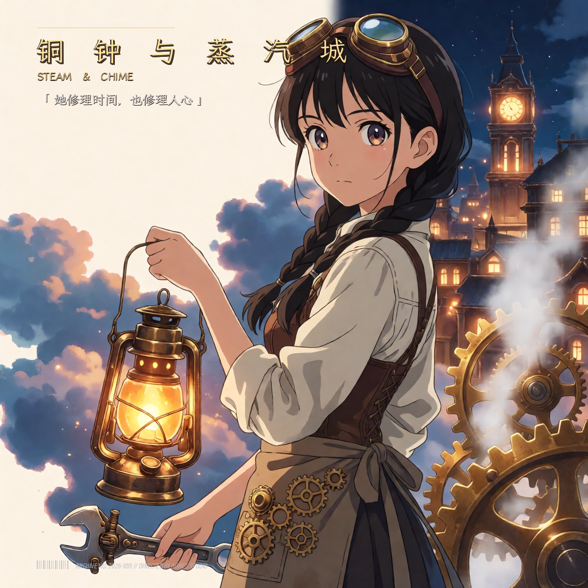
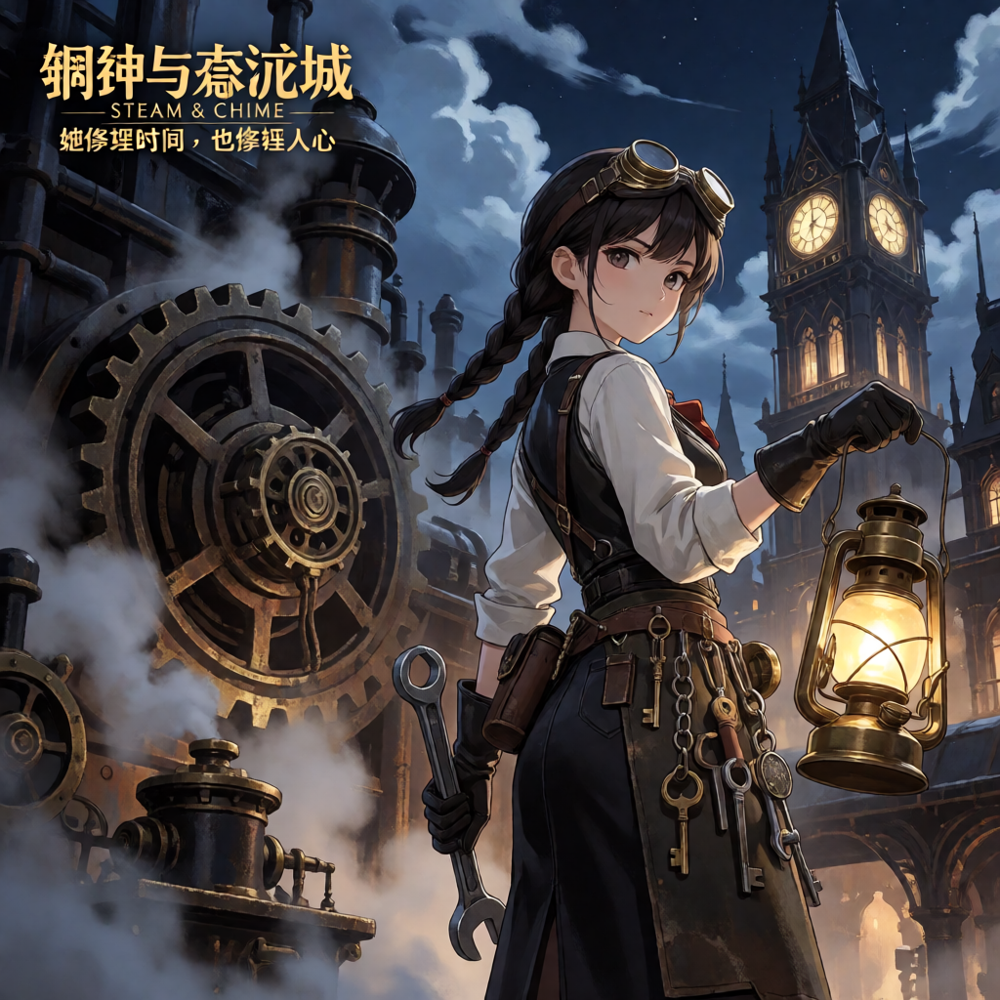

🌟 全量资产集大成中心
•
42 幅全景收录
Agnes 多模态高阶数字资产画廊
全量整合25 幅亚洲美人摄影、4 组同一人跨场景角色一致性实测、4 幅全身高级时装立像，以及多流派开源字体海报系列。支持多维交叉筛选、全屏无损微距检视与提示词结构化抽屉。
📸 亚洲美人 25 幅
🧬 角色一致性 Face DNA
👗 全身 Editorial 立像
🎨 霞鹜文楷/得意黑海报

《铜钟与蒸汽城》霞鹜文楷版
点击查看元数据 →
🔬 实测显微镜：原生乱码 vs 纯净底图对比
左右拖动中央滑块，直观对比生图模型直接写字的拓扑崩溃与提示词纯化去污染后的赛璐珞质感
纯净二次元底图 (去污染 · 无文字侵蚀)

原生生成乱码 (错字/伪假名/风格污染)
画幅:
🔍
深度汲取抖音【书生今天也在学】电影感封面法则
•
形 · 斜 · 比 · 色 · 空
电影感封面与中文字体工程工作坊
融合“加块绿、拆开字、借光影、宽银幕遮幅”六大爆款排版范式，结合 GitHub 顶尖免费商用开源字体。
🎬 电影感版式预设选择器
💡 当前排法设计公式：
致敬约瑟夫·米勒-布罗克曼：严格 12 栏绝对对齐红黑栅格、124px 巨型无衬线字标穿透版芯、瑞士红 (#E11D48) 强调色块与 1px 极细贯穿基线。右下画芯硬裁切 20px 实色投影，展现瑞士国际平面设计风格极致的理性与秩序美感。
📐 排印参数量化看板 (Metrics)
Swiss 12-Col
字阶级数:1.618 黄金
主标题 H1:124 pt 纯黑
网格基线:16 px Gutter
安全边距:50 px (4.1%)
强调主色:#E11D48 瑞士红
主体避障:零遮挡 ✓
✨
实时自定义文案海报工坊
实时光栅化生成
任意输入您的主题文案，选用当前排版流派与底图，一键光栅化输出 1200×1200 商业级海报。
就绪 · 基于无头 Chrome 与矢量排版引擎
检视模式:
1200 × 1200 px (1:1)
•

👑 瑞士网格 A · 苏黎世秩序 (Josef Müller-Brockmann)
形
方正/圆角矩形色块打底
斜
得意黑 8° 窄斜体倾斜动势
比
大标题 68pt vs 小标 10pt
色
莫兰迪暗绿/琥珀暖金调色
空
两边拆字预留中心人物负空间
⚡ DALL-E 3 JSON → Agnes 智能转译编译器
自动拆解 JSON 参数层级，剔除机械标记，注入物理光学、材质细节与反塑料感约束
源数据：DALL-E 3 JSON 模式
JSON 输入
编译输出：AGNES 扩散提示词
📚 17 大经验分类与技能标准库
系统已全量收敛 ConardLi/garden-skills 沉淀的 17 个大类与高频实操模板
🛠️ 开源生态集成与本地能力面板
工作台深度整合的 5 大本地基础设施，无缝贯通模型路由、代码分析、网络抓取与浏览器接管
🛰️ 系统生命周期哨兵 (Sentinel Hub)
实时追踪本地聚合网关健康、上游 GitHub 模板同步状态与容灾自动化流水线
本地 New API 状态
运行极佳
32ms 延迟
活跃 Agnes 渠道:6 / 6 满载在线
极速响应节点:Agnes-4 (1697ms)
熔断保护:连续 3 次失败自动熔断
Garden-Skills 上游仓库
已同步
ConardLi/garden-skills
监控分支:main (e8d91f2)
落地技能分类:17 大类完整落地
自动巡检频次:每小时第 15 分钟
容灾快照 (Backup Cron)
生效中
03:00 每日自动快照
快照机制:SQLite .backup 在线热备
生命周期归档:7 天自动轮转过期清理
存储位置:~/.new-api/backups